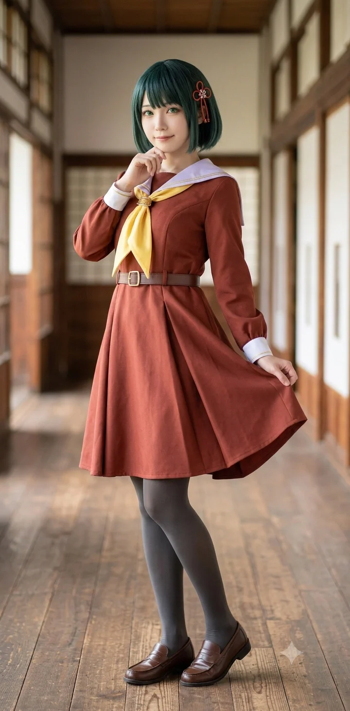

효빈광역시 당가동 서브컬처 파티(임은혜, 안공주, 유리내, 백모모)의 멤버이자, 효빈대학교 역사학과에 재학 중인 대학생. 하스노소라 여학원 스쿨 아이돌 클럽의 모모세 긴코를 모시는 영혼의 오시다.
본인의 희귀 성씨인 일백 백(百)과 한글 이름 모모(桃)의 조합부터, 훗날 모모세 긴코(百生 吟子)의 완벽한 성지순례 구역이 되는 '치원군 백생면 음자리(百生面 吟子里)'에서 태어났다는 점, 그리고 전통 명주 직조·자수 장인인 외할머니 정옥분(1945년생) 여사와 한옥 소목장 아버지 백승호(1975년생), 한복 디자이너 어머니 송은영(1978년생)의 영향을 지대하게 받아 전통문화를 사랑한다는 점까지 긴코와의 완벽한 평행이론을 자랑한다. 평소에는 차(茶)를 마시며 고전문학을 읽는 참하고 단정한 아가씨 같지만, 화가 나면 일진들을 오줌 지리게 만드는 엄청난 사자후를 뿜어내는 반전 매력의 소유자다. 그룹 내에서 가장 키가 크고(171cm) 임은혜(B89.9)와 자웅을 겨루는 육감적인 피지컬(B88.8)을 자랑하며, 입이 터지면 멈추지 않는 수다쟁이 기질마저 모모세 긴코(및 그 팬덤 밈)와 똑 닮아 있다.
또한 값싼 중국산 공산품의 범람으로 부모님의 전통 공방이 빚더미에 앉았을 때 이를 극복해 낸 강인한 집안의 외동딸이며, 자신의 고향(외할머니 댁)인 치원군 음자리를 핍박했던 꼰대 단체장 백민우 전 군수를 극도로 혐오하여, 2024년 당가동 서브컬처 파티 4인방과 연합해 백민우의 악질적인 보복 행정을 전국에 공론화시켜 그의 2026년 선거 낙선에 결정적인 기여를 한 엄청난 전투력을 보유하고 있다.
2006년 10월 21일, 덕빈북도 치원군 백생면(百生面) 음자리(吟子里)에서 태어났다. 출생 스토리가 매우 스펙터클한데, 당시 임신 9개월 차(만삭 직전)였던 어머니 송은영(1978년생) 여사가 친정어머니 정옥분(1945년생) 여사가 계신 백생면 음자리에 전통 명주 원단을 가지러 잠시 들렀다가, 갑작스럽게 폭우로 도로가 통제된 상황에서 진통이 시작되어 효빈시의 큰 산부인과로 돌아가지 못하고 음자리 외가댁 안방 온돌 위에서 외할머니가 직접 탯줄을 자르며 그대로 아이를 낳아버린 것이다! 이 때문에 백모모의 공식 출생지는 완벽하게 '치원군 백생면 음자리'로 박히게 되었다.
소름 돋게도 이 지명은 백생(百生)과 음자(吟子)가 합쳐져 훗날 일본의 스쿨 아이돌 모모세 긴코(百生 吟子)와 100% 일치하는 지명으로 알려지며 오타쿠들의 초대형 성지순례 코스가 되었다. (게다가 백모모의 생일인 10월 21일은 긴코의 생일 10월 20일의 정확히 하루 뒤다. 사실 10월 20일 밤 11시 50분경에 진통이 절정에 달해 머리끝이 보였으나 자정을 5분 넘겨 태어나는 바람에 10월 21일생이 되었다고 한다.)
어린 시절부터 효빈시 안천구 당가동에서 자랐지만, 맞벌이로 바쁜 부모님을 대신해 방학이나 주말마다 자신이 태어난 백생면 음자리의 외할머니 정옥분(1945년생) 여사 댁에서 살다시피 하며 자랐다. 외할머니 정옥분 여사는 음자리에서 60년 넘게 누에고치에서 명주실을 뽑아 천연 쪽빛(남색·옥색) 염색을 하고 전통 자수를 놓는 규방 공예의 살아있는 전설이었다. 이는 원작 모모세 긴코가 카나자와 전통 가가유젠(염색·자수) 장인인 할머니의 영향을 깊게 받아 전통 의상을 사랑하게 된 서사와 소름 돋도록 똑같다.
또한 아버지 백승호(1975년생) 씨는 대목장·소목장 기술을 이어받아 전통 한옥 창호와 고가구를 못 하나 쓰지 않고 짜 맞추는 목공예 장인이었고, 어머니 송은영(1978년생) 여사는 외할머니의 명주로 한복을 짓는 침선(針線) 디자이너였다.
그러나 백모모가 초등학생이던 2014~2017년 무렵, 이 유서 깊은 전통 공예 가문에도 파산 직전의 가혹한 우여곡절이 닥쳤다.
값싼 중국산 공장제 기성복 한복과 화학 도료를 칠한 저가 수입 가구들이 시장을 싹쓸이하면서, 정직하게 수작업으로 원목과 천연 명주만을 고집하던 아버지 백승호 씨의 목공소와 어머니의 한복 공방에 주문이 뚝 끊겨버린 것이다. 설상가상으로 아버지가 납품했던 전통 문화재 복원 원청업체가 부도를 내고 대금을 떼어먹으면서 당가동의 공방 건물이 경매로 넘어갈 위기에 처했고, 백모모네 가족은 한동안 공방 한구석의 좁은 쪽방에서 겨울에 보일러도 제대로 틀지 못하고 전기장판 하나로 버티는 극심한 생활고를 겪어야 했다. (백모모가 지금도 따뜻한 온돌 바닥을 만나면 본능적으로 대자로 드러누워 뒹굴거리는 ‘긴코 바닥’ 버릇이 생긴 것도, 역설적으로 이 어린 시절 추웠던 쪽방의 기억과 음자리 외할머니 댁의 따뜻했던 아랫목에 대한 그리움이 결합된 결과다.)
하지만 그 지독한 가난 속에서도 외할머니 정옥분 여사와 부모님은 단 한 번도 불량 자재를 쓰거나 전통의 원칙을 꺾지 않았고, 어린 모모에게 늘 다도(茶道)와 고전문학을 가르치며 선비 가문의 기품을 잃지 않도록 보살폈다.
2023년 하스노소라 프로젝트가 공개되고 치원군 백생면 음자리(百生面 吟子里)가 '모모세 긴코의 전 세계 유일 한자 일치 성지'로 급부상하자, 가문과 마을에 기적 같은 반전이 찾아왔다! 전국과 해외(일본 등)에서 성지순례 오타쿠 관광객들이 음자리로 구름처럼 몰려들면서, 외할머니 정옥분 여사의 ‘음자리 규방공방’이 만든 전통 자수 책갈피·키링과 어머니 송은영 여사의 개량한복, 아버지 백승호 씨의 원목 굿즈 진열대가 날개 돋친 듯 팔려나가며 집안의 묵은 빚을 단숨에 갚아나가기 시작한 것이다.
하지만 이를 "천박한 왜색 만화 쪼가리 유행"이라며 혐오스럽게 여긴 당시 보수 성향의 백민우 치원군수가 특유의 꼰대력을 발휘해 도로 미관을 해친다며 상인들이 자비로 세운 긴코 등신대 강제 철거 계고장을 날리고 단속반을 보내 온갖 훼방을 놓았다.
이 사실을 알게 된 백모모는 백민우 군수를 그야말로 벌레 보듯 극혐하게 되었다. 특히 자신이 하필이면 저 쓰레기 같은 꼰대 군수와 똑같은 발음의 '백'씨라는 사실에 심한 수치심과 생리적인 역겨움을 느끼며 진심으로 성을 어머니 성씨인 송(宋)씨로 갈아버릴까 진지하게 고민했다.
하지만 다행히(?) 아버지 백승호 씨가 족보를 펼쳐 확인해 준 결과, 백민우 군수의 한자는 속이 시커멓게 썩어 문드러졌으면서 겉만 하얀 척하는 '흰 백(白)' 자였고, 백모모 자신의 가문은 신라 시대부터 이어져 온 전국 인구 3천 명 미만의 초희귀 성씨인 '일백 백(百, 남포 백씨)' 자를 쓴다는 사실을 재확인했다. 이에 모모는 "휴, 다행히 저 꼰대랑 나는 근본 한자부터가 안 겹친다. 고귀한 일백 백(百)씨 가문에 저런 쓰레기가 묻을 뻔했네"라고 안도하며 정신승리(...)를 시전하여 간신히 끓어오르는 화를 누그러뜨렸다고 한다.
2024년 발생한 이 사건은 백모모와 당가동 서브컬처 파티의 진정한 우정과 파괴적인 전투력을 보여준 레전드 일화다.
참다못한 백모모가 직접 치원군청 군수 비서실에 전화를 걸어 "우리 외할머니(정옥분 여사)가 모처럼 성지 특수로 무릎 관절염 수술비 벌고 행복해하시는데, 군수라는 인간이 소멸 위기 농촌 경제 살리기는커녕 왜 지X이냐!"라고 매섭게 따져 물었다. 그러자 밴댕이 소갈딱지였던 백민우는 치졸하게도 음자리 일대에 배정되었던 전통공예 마을 보조금 및 농민 숙원 사업 예산을 싹둑 잘라버리는 악질적인 보복 행정을 저질렀다.
이 소식을 듣고 눈물을 흘리는 외할머니와 음자리 주민들을 보며 극대노한 백모모를 위해, 개과천선한 임은혜와 안공주, 유리내 3인방이 즉각 발 벗고 나섰다.
이 네 명의 완벽한 '여고생 연합 협공' 덕분에 치원군청은 전국 서브컬처 팬들과 네티즌들의 십자포화 및 감사원 민원 폭탄을 맞고 쑥대밭이 되었다. 이 사건은 훗날 치원군의 젊은 층과 음자리 상인들의 표심을 완벽하게 잃게 만들어, 백민우가 2026년 제9회 지방선거에서 단 0.18%p 차이로 참혹하게 낙선하게 된 가장 결정적인 스노우볼 중 하나로 작용했다.
백민우의 낙선에는 백생면(특히 음자리)의 표심 변화가 결정적이었다. 백생면 전체적으로는 보수 콘크리트 탓에 백민우가 근소하게 우세했으나, 예산 삭감 보복을 직접 당했던 '음자리' 일대 투표구에서는 외할머니 정옥분 여사를 필두로 한 노인회와 서브컬처 민심이 결집하여 오히려 더불어민주당 유진태 후보에게 몰표가 쏟아졌다. 이 음자리의 반란 표가 백민우와 유진태의 운명을 가른 0.18%p의 기적을 만들어낸 핵심 요인이었다.
2026년 백민우를 몰아내고 당선된 유진태 현 치원군수에 대해 백모모와 가족들은 전폭적인 지지를 보내고 있다. 유진태 군수가 당선되자마자 박효빈 효빈광역시장과 협약을 맺어 삭감되었던 백생면 음자리의 예산을 즉각 2배로 인상해 복구시켰고, 음자리 외할머니 공방을 ‘치원군 제1호 전통-서브컬처 융합 명소’로 공식 지정함과 동시에 아버지 백승호 씨에게 군청 한옥 도서관 건립 공사를 맡겼기 때문이다. 덕분에 현재 백모모네 집안은 과거의 가난을 완전히 털어내고 당가동과 음자리를 아우르는 부유한 명문 장인 가문으로 완벽하게 부활했다.
하가초등학교를 거쳐 진학한 당가중학교에서 임은혜, 안공주, 유리내와 함께 단짝 친구가 된다. 2019년 1학년 당시, 은혜가 어머니의 세뇌로 오타쿠를 극혐한다는 사실을 눈치챈 모모는 "응, 난 조용히 차(茶) 마시면서 독서하는 편이야. 고전문학 쪽이 마음이 편안해지더라고."라며 단아한 아가씨 코스프레(일코)를 시전하며 가방 속 100개의 굿즈를 완벽하게 은폐했다.
하지만 2021년 3학년 가을, 안공주가 줌(Zoom) 링크 대신 3D 라이브 무대 유튜브 링크를 단톡방에 올리는 대참사가 터지며 일코가 완벽하게 박살 났다. 혐덕 스위치가 눌린 임은혜가 책상을 치며 "너네 진짜 더럽고 역겨워! 냄새나는 씹덕 병균 쓰레기들!"이라며 선을 넘는 폭언을 쏟아내자, 항상 침착하게 보온병에 담긴 차를 홀짝이던 백모모는 조용히 찻잔을 내려놓았다. 그리고 서늘하게 굳은 표정으로 안경을 치켜올리며 "은혜야. 남이 뭘 좋아하든 존중할 줄 모르는 애랑은, 우리도 3년 우정 여기서 끝내는 게 맞겠다. 넌 입이 참 싸다."라며 가장 뼈아픈 팩트 폭격을 날리고 싸늘하게 절교를 선언했다.
2023년 초, 임은혜가 혐덕 일진 무리와 손절하려다 으슥한 골목에서 성적 협박을 당하는 현장을 목격한다. 안공주가 재빠르게 'Aqours 오시 어벤져스 5인방'을 불러와 일진들을 물리력으로 제압한 직후였다. 바닥에 깔린 일진이 정신을 못 차리고 "야 임은혜 이 ㅆㅂ년아! 넌 어차피 나한테 먹히게 되어있어 ㅆㅂ!"이라며 끝까지 더러운 입을 놀리자, 평소 찻잔을 들고 고전문학을 읊던 단정한 백모모의 이성의 끈이 완벽하게 끊어지고 말았다.
골목이 쩌렁쩌렁 울릴 정도의 어마어마한 사자후에, 어벤져스 5인방은 물론이고 일진들, 안공주, 유리내, 심지어 덜덜 떨던 임은혜마저 숨을 헉 들이켜며 그대로 얼어붙고 말았다. 백모모가 이토록 험악한 말을 내뱉으며 분노한 것은 그들 역사상 처음이었고, 이 사건은 임은혜가 과거의 죄를 뼛속 깊이 뉘우치게 만든 가장 강력한 계기가 되었다.
이후 진리를 깨닫고 개과천선한 임은혜가 당가고등학교 복도에서 영혼의 도게자를 시전했다. 은혜가 덜덜 떨며 내민 쇼핑백 안에는 백모모의 성씨인 '일백 백(百)'과 이름 '모모'에 완벽하게 맞춘 모모세 긴코 전통풍 신의상 아크릴 스탠드와 캔뱃지가 정확히 100(百)개 들어 있었다.
백모모는 무릎을 꿇은 은혜를 빤히 내려다보며 굿즈의 개수를 천천히 세었다. "98... 99... 100. 정확하네." 모모는 피식 웃으며 서늘했던 표정을 풀었다. "우리한테 오타쿠 병균이라고 부르던 업보치고는 꽤나 비싼 청구서였네. 뭐, 이틀 밤새면서 눈물 콧물 쏟은 정성이 갸륵해서 특별히 봐준다. 웰컴 투 하스노소라 월드다, 은혜야."라며 우아하게 화해를 받아주었다. 이후 굿즈 100개를 가방에 소중히 챙긴 그녀는 백치미 은혜의 폭주를 막아주는 든든한 멘탈 지주로 활약하고 있다.
이름인 백모모부터 모모세(百生)의 백(百)과 모모(桃)를 그대로 직역한 수준이며, 생일(10/21)마저 긴코(10/20)의 하루 뒤다.
가장 소름 돋는 것은 외모다. 단정하게 자른 흑발 단발머리, 일자 앞머리를 살짝 왼쪽으로 넘긴 스타일, 짙은 눈썹까지 모모세 긴코의 3D 모델링을 현실에 복사 붙여넣기 한 수준이다. 유일하게 다른 점은 눈동자 색깔뿐이다. (긴코는 보라/자주색 눈동자, 백모모는 짙은 흑갈색이다.) 덕분에 그냥 사복 개량 한복만 입고 나가도 사람들이 긴코 코스프레인 줄 알고 사진을 찍어간다.
실제 하스노소라 멤버 중 긴코가 104기 최장신(162cm)이자 선배들처럼 글래머러스한 체형을 가졌듯, 백모모 역시 서브컬처 파티 4인방 중에서 가장 키가 큰 최장신(171cm)을 자랑한다. 게다가 단정하고 얌전한 성격과 펑퍼짐한 개량한복 옷차림에 가려져 있을 뿐, 실제 쓰리사이즈는 B88.8-W60-H87(성씨인 百과 길숫자 팔팔을 맞춘 기적의 88.8!)로 엄청나게 육감적이어서 파티 내에서 유일하게 미모의 임은혜(B89.9)와 압도적 피지컬로 자웅을 겨루는 수준이다. (이 점마저 현실 고증 완벽이라는 평가를 받는다.)
평소에는 차분해 보이지만, 한 번 입이 터지면 쉴 새 없이 오타쿠 토크와 역사 TMI를 쏟아내는 수다쟁이 기질이 있다. 이는 하스노소라 팬덤 초창기에 긴코가 미후네 시오리코를 닮아 '말 많은 시오리코'로 불리던 밈이 현실에 그대로 반영된 셈이다.
또한 가장 특이한 버릇 중 하나로, 집이나 동아리 방에 들어가면 소파를 놔두고 굳이 바닥 한복판에 대자로 드러누워 뒹굴거리는 것을 매우 좋아한다. 일명 "긴코 바닥" 모드로, "전통의 온돌 바닥 기운을 느끼는 중이다"라는 핑계를 대며 친구들을 어이없게 만든다.
외할머니의 영향과 평소의 고전문학 독서 습관 덕분에 학창 시절 내내 국어(특히 고전문학), 한국사, 한문, 그리고 가정(바느질) 과목에서 압도적인 전교 1등을 놓치지 않았다. 다른 이과적/논리적 과목에서는 프로게이머 뇌지컬을 가진 안공주가 1등이었지만, 역사와 문학, 전통 윤리 분야만큼은 파티의 천재 브레인 안공주마저 백모모를 절대 이기지 못했다. 현재 효빈대학교 인문과학대학 역사학과에 수석(과탑)으로 진학하여 전공을 완벽하게 살리고 있다.
줌 링크 대참사 당시 임은혜에게 벼락같은 일침을 날린 가노은의 대장부 기질을 매우 높게 평가한다. 가노은 역시 모모의 차분하면서도 속 깊은 면모를 존중한다. 모모가 바닥에 대자로 드러눕는 '긴코 바닥'을 시전할 때마다 가노은이 "모모 쨩, 일어나! 바닥 차가워!"라며 억지로 일으켜 세우는 환장의 콤비이기도 하다. 국어와 한국사에 능통한 문과 천재 모모와 효빈대 음악학과에 재학 중인 음악 천재 노은은 종종 고즈넉한 한옥 카페에서 함께 차를 마시며 죽이 잘 맞는 모습을 보여준다.
파티 밖 인물이지만 가노은을 매개로 자주 엮이는 빈스마트의 영애 마루빈. 툭하면 "가노은!!"을 외치며 사자후를 내지르는 츤데레 마루빈을 보며, 모모는 보온병에 담긴 우롱차를 여유롭게 홀짝이며 "루빈 아가씨는 오늘도 혈기가 왕성하네."라고 노인네처럼 혀를 차며 감상하는 편이다.
하지만 가끔 마루빈이 선을 넘게 떽떽거리며 시끄럽게 굴면, 모모가 안경을 스윽 올리며 서늘한 목소리로 "루빈아, 공공장소에선 예의를 지켜야지?"라고 한마디 던져 마루빈을 단숨에 '이미와칸나이!' 상태로 얼어붙게 만드는 은근한 천적이기도 하다.
가노은의 쌍둥이 동생이자 당가동 파티의 순둥이인 가희나를 매우 귀여워한다. 일진 무리 앞에서 덜덜 떨면서도 할 말은 다 했던 희나의 외유내강 성격을 무척이나 기특하게 여기며, 가방에서 고급 화과자나 유부초밥을 꺼내어 희나의 입에 쏙 넣어주는 든든한 할머니(?) 같은 포지션을 자처한다. 희나 역시 단아하게 차를 마시는 모모를 잘 따르며, "모모 선배님은 진짜 멋있슴다!"라며 졸졸 따라다닌다.
자본주의의 화신이자 인터넷 방송인 엘튜버인 오낙희(나츠미 모티브)와는 그야말로 극과 극의 성향을 자랑한다. 전통과 예절, 여유를 중시하는 백모모의 눈에 오낙희는 그저 "시끄럽고 상스러운 장사꾼"에 불과하다. "어허, 양반집 규수 앞에서 돈 얘기는 상스러운 법이야."라며 오낙희가 들이대는 카메라를 한지 부채로 찰싹 때리며 막아내는 것이 일상이다.
반면 오낙희는 백모모의 뛰어난 외모와 우아한 전통 한복 차림을 최고의 썸네일 어그로용(?) 소재로 여기며, "전통 미소녀의 다도 체험 브이로그 데스노!"라며 끈질기게 카메라를 들이댄다. 결국 폭발한 백모모에게 멱살이 잡혀 무릎을 꿇고 3시간 동안 강제 다도 예절 교육을 받는 참교육을 당하기도 하지만, 낙희가 사과(?)의 의미로 진상하는 고급 찻잎이나 한정판 굿즈에는 못 이기는 척 넘어가 주는 환장의 앙숙 콤비다.
모든 것을 1분 1초 단위로 쪼개며 효율을 따지는 오마리(토마리 모티브, 1살 후배)와는 기묘한 철학적 대립 관계에 있다. 오마리가 동아리 방을 방문했을 때, 백모모가 바닥 한가운데 대자로 누워 뒹굴거리는 '긴코 바닥' 모드를 목격하고는 정색하며 팩트를 꽂았다. "모모 선배님. 바닥에 누워 있는 행위는 체온 유지 및 시간 활용 측면에서 심각하게 비효율적입니다. 당장 일어나십시오."
그러나 산전수전 다 겪은 선비 백모모는 타격감 0의 평온한 미소를 지으며 대답했다. "마리야, 효율만 따지다가는 인생의 깊은 향기를 놓치는 법이란다. 일단 이리 와서 누워 보렴. 우주의 기운이 느껴질 거야." 그리고는 당황하는 마리의 손목을 잡아당겨 강제로 바닥에 눕혀버렸다. 차가운 팩폭 기계 오마리조차 백모모의 이 무논리 평온함 앞에서는 페이스를 잃고 휩쓸려버리곤 한다.
백모모가 스무 살 대학생이 되어서도 전통 다도와 개량한복, 고전문학을 사랑하는 ‘현실판 모모세 긴코’로 자라날 수 있었던 근원은, 그녀를 둘러싼 장인(匠人) 가족들의 헌신적인 삶에 있다.
원작 모모세 긴코의 할머니가 카나자와 전통 염색 공예인 가가유젠(加賀友禅) 공방을 지키듯, 백모모의 외할머니 정옥분(1945년생) 여사는 덕빈북도 치원군 백생면 음자리(吟子里)의 고택에서 60년 넘게 전통 명주 직조와 천연 쪽염색, 그리고 전통 자수를 이어온 무형문화재급 규방 공예 장인이다. 2006년 10월 21일 폭우가 쏟아지던 밤, 친정에 왔던 딸 송은영 여사가 갑자기 산통을 겪자 안방 온돌 위에서 직접 소독한 가위로 탯줄을 자르고 명주 배냇저고리로 외손녀 모모를 받아낸 장본인이기도 하다.
정옥분 여사에게 무남독녀 외손녀 백모모는 눈에 넣어도 아프지 않을 세상의 전부다. 2010년대 중반 사위와 딸의 공방이 빚더미에 앉았을 때 어린 모모를 음자리로 데려와 아랫목에서 유부초밥과 곶감을 먹이며 키웠고, 모모에게 바느질과 다도, 그리고 "비단은 천 번을 두드려야 빛이 나고, 사람은 백 번을 참아야 향기가 난다. 하지만 불의 앞에서는 바늘 끝처럼 날카로워야 한다"는 선비 정신을 가르쳤다. 2024년 백민우 전 군수가 음자리 성지 예산을 보복 삭감했을 때 눈물을 흘렸으나, 손녀 모모와 친구들(임은혜, 안공주, 유리내)이 백민우를 전국구로 참교육하고 2026년 유진태 새 군수가 당선되자 마을 잔치를 열어 소녀들에게 명주 한복을 한 벌씩 직접 지어 입혀주셨다.
아버지 백승호(1975년생) 씨는 전국에 3천 명도 안 되는 희귀 성씨인 남포 백씨(일백 백 百) 종가의 장손이자, 대패와 끌 하나로 수백 년 된 고택과 전통 소반, 서안(책상)을 복원하는 소목장(小木匠)이다. 184cm의 훤칠한 장신으로 딸 모모에게 171cm의 큰 키와 호랑이 같은 성량(사자후 발성 통)을 물려주었다. 어머니 송은영(1978년생) 여사는 정옥분 여사의 무남독녀 외동딸로, 안천구 당가동에서 전통 한복 및 모던 생활한복 공방 ‘백화연(百花緣)’을 운영하는 침선 디자이너다. (모모가 매일 입고 다니는 세련된 하늘색·아마노하라색 개량한복과 교복 리폼 의상은 100% 어머니 송은영 여사의 작품이다!)
2014~2017년 저가 중국산 가구와 기성복의 난립, 그리고 원청업체의 부도로 당가동 공방이 경매 위기에 처했을 때, 부부는 밤마다 쪽방에서 손가락에 피가 나도록 나무를 깎고 바느질을 하며 외동딸 모모의 학원비만큼은 단 한 번도 밀리지 않았다. 현재는 딸 모모의 활약으로 음자리와 당가동이 ‘모모세 긴코 성지’로 대박이 나면서, 아버지 백승호 씨가 제작하는 ‘전통 짜맞춤 원목 피규어·아크릴 스탠드 100칸 진열장(일명 백생 백보장)’과 어머니 송은영 여사의 ‘하스노소라 전통풍 콜라보 생활한복’이 오타쿠들 사이에서 6개월 예약 대기가 걸리는 명품으로 등극해 제2의 전성기를 누리고 있다.

백모모가 전통문화와 자신의 가족에 대해 그토록 뜨거운 자부심(과 건드리면 폭발하는 역린)을 가지게 된 데에는, 초등학교 3학년이던 2016년 겨울에 겪었던 가슴 아픈 가족사가 자리 잡고 있다.
당시 아버지 백승호(1975년생) 씨가 전통 한옥 호텔 신축 공사에 납품했던 2억 원 상당의 수제 원목 창호와 고가구 대금을 원청 시행사가 부도를 내고 잠적해 버리면서, 당가동의 목공소와 어머니 송은영(1978년생) 여사의 한복 공방에 법원 경매 및 가압류 통지서가 날아들었다.
설상가상으로 악질 채권 추심업자들이 연대보증인이었던 외할머니 정옥분(1945년생) 여사의 치원군 백생면 음자리(吟子里) 고택까지 찾아와, 정옥분 여사가 열다섯 살 때부터 55년간 손때를 묻히며 명주를 짜온 가보 ‘전통 느티나무 수제 베틀과 천연 쪽염색 독(항아리)’에까지 빨간 압류 딱지를 붙이려 한 것이다!
그날은 마침 주말이라 열 살배기 어린 모모가 음자리 외할머니 댁에 내려가 있던 날이었다. 건장한 추심업자 세 명이 마당으로 들이닥쳐 베틀에 딱지를 붙이고 트럭에 실으려 하자, 일흔이 넘은 정옥분 할머니는 맨발로 마당에 뛰어 내려와 베틀 기둥을 온몸으로 끌어안고 절규하셨다.
"이 베틀은 내 목숨이고 우리 음자리 비단의 혼(魂)이여!! 내 눈에 흙이 들어가기 전엔 이 베틀 못 가져간다!! 차라리 내 늙은 몸뚱어리를 트럭에 싣고 가라!!"
추심업자가 할머니의 어깨를 거칠게 밀치려던 바로 그 순간, 마루에서 할머니가 쪄준 감자를 먹고 있던 열 살짜리 소녀 백모모의 눈이 뒤집혔다. 또래보다 머리 하나는 더 컸던 모모는 부엌에서 할머니가 명주실을 자를 때 쓰던 무쇠 가위를 들고 튀어나오더니, 할머니 앞을 가로막고 서서 동네 어귀의 까마귀 떼가 놀라 날아갈 만큼 쩌렁쩌렁한 인생 최초의 ‘어린이 사자후’를 내질렀다!
"야 이 나쁜 아저씨들아아아악!!!! 우리 할머니 건드리지 마아아!! 법원 아저씨가 와도 기술자가 밥 먹고 사는 연장(도구)은 압류 못 한다고 우리 아빠가 그랬어!! 우리 할머니 베틀에 손대면 내가 경찰 아저씨랑 마을 이장 할아버지 다 불러서 너네 감옥에 백(百) 년 동안 가둬버릴 거야아아악!!"
실제로 대한민국 《민사집행법》 제195조 제3호에 따르면 ‘채무자가 생계를 유지하는 데 필수적인 직업용 도구(장인의 연장과 베틀 등)’는 압류 금지 물건에 해당한다! 고전문학과 법학 교양서를 즐겨 읽던 아버지 어깨너머로 그 상식을 주워듣고 있던 열 살짜리 여자아이가 살기 등등한 사자후로 법조문 팩트를 꽂아 넣자, 당황한 추심업자들이 주춤거렸고 그사이 모모의 고함 소리를 들은 음자리 청년회 삼촌들과 이장님이 쇠스랑과 트랙터를 몰고 몰려와 업자들을 쫓아냈다.
할머니의 품에 안겨 엉엉 울던 열 살 모모는 그날 저녁 할머니가 건네준 따뜻한 유부초밥을 먹으며 "할머니, 내가 커서 꼭 역사학자가 돼서 우리 할머니 베틀이랑 음자리 비단을 박물관 국보로 만들어 줄게!"라고 맹세했다. 훗날 모모세 긴코의 스토리가 공개되었을 때 모모가 오열하며 긴코 오시가 된 것도, 할머니의 가가유젠 공방을 지키려 고군분투하던 긴코의 모습이 10년 전 자신의 유년기와 100% 겹쳐 보였기 때문이었다. [1]
본문 2.4절에 언급된 2024년 백민우 전 치원군수의 보복 행정 사건 당시, 사실 백모모가 군청에 항의 전화를 걸기 직전에 백생면 음자리 현장에서는 아버지 백승호(1975년생) 씨와 외할머니 정옥분(1945년생) 여사가 온몸으로 치른 ‘등신대 결사 옹위전’이 있었다.
당시 음자리 마을 입구 느티나무 정자 옆에는, 성지순례를 온 전국의 하스노소라 팬(물붕이)들이 십시일반 돈을 모아 기증하고 백모모의 아버지 백승호 씨가 최고급 금강송 원목으로 비바람 막이 한옥 지붕틀까지 짜서 씌워준 ‘모모세 긴코 한복·기모노 합동 등신대’가 세워져 있었다. 외할머니 정옥분 여사는 매일 아침 산책길에 그 등신대 유리를 마른 명주 수건으로 정성껏 닦아주며 "아이고, 우리 모모랑 똑같이 생긴 예쁜 일본 손녀딸(긴코) 덕분에 우리 적적하던 시골 마을에 젊은 총각 처녀들이 바글바글 찾아와서 마을이 다시 살아났구먼~"이라며 친손녀처럼 아끼셨다.
그런데 어느 날 오전, 당시 군수였던 백민우가 음자리 순시를 나왔다가 이 등신대를 보고는 "어허! 신성한 충효의 고장 치원군에 무슨 해괴망측한 일본 만화 계집애 간판이냐! 당장 내일 행정대집행 철거반 불러서 도끼로 다 부숴버려라!"라고 지시한 것이다.
다음 날 아침 9시, 군청 철거 용역 트럭이 음자리 마을 입구에 들이닥치자 외할머니 정옥분 여사를 비롯한 음자리 할머니 15명이 등신대 앞에 일렬로 의자를 놓고 앉아 인간 바리케이드를 쳤다! 그리고 마침 주말을 맞아 처가에 내려와 있던 184cm의 거구 소목장 아버지 백승호 씨가 자신의 목재 운반용 3톤 지게차를 몰고 나와 철거 트럭 정면을 쾅 가로막아 버렸다!
[아버지 백승호 (51세)]: (지게차 운전석에서 내려 굵은 팔뚝을 걷어붙이며) "어이, 군청 양반들! 이 등신대 세운 땅은 도로부지가 아니라 우리 장모님(정옥분 여사) 개인 사유지 마당 안쪽이고, 저 한옥 지붕틀은 내가 건축법 시행령 기준 맞춰서 합법적으로 짠 공예 조형물이오! 영장도 없이 남의 사유재산이자 내 딸(백모모) 친구 같은 조형물에 손끝 하나라도 대면, 이 백승호가 대패 날 들고 공무집행방해가 아니라 특수손괴 현행범으로 당신들부터 고발할 테니 당장 차 빼시오!!"
[외할머니 정옥분 (81세)]: "맞다 이놈들아!! 옛날 사능동 할매들이 윤대환이 때려잡으려고 빗자루 들고일어난 것처럼, 우리 음자리 할매들도 다듬이방망이 들고 군청으로 쳐들어갈 테니까 썩 물러가라!!"
아버지의 합법적 법리 방어와 지게차 위압감, 그리고 할머니들의 다듬이방망이 부대에 쫄아붙은 철거반이 그냥 철수하자, 자존심이 상한 백민우 군수가 그 보복으로 음자리 농민 보조금 예산을 싹둑 잘라버리는 찌질한 짓을 저질렀던 것이다.
이후 딸 백모모와 당가동 파티(임은혜·안공주·유리내)가 이를 온라인으로 대폭발시켜 백민우를 낙선시키고 유진태 군수가 당선된 날, 아버지 백승호 씨는 그 등신대 옆에 아예 유진태 군수의 정식 허가를 받아 ‘백생면 음자리 모모세 긴코 공식 관광안내소 한옥 정자’를 멋지게 지어 올리며 가문의 승리를 자축했다.
당가동 서브컬처 파티 4인방(임은혜, 안공주, 유리내, 백모모)의 신체 밸런스를 살펴보면 기묘한 피지컬 양극화가 존재한다. 안공주(156cm)와 유리내(158cm)가 아담하고 귀여운 체형인 반면, 임은혜(165cm, B89.9)와 백모모(171cm, B88.8)는 탈인간급 글래머 투톱을 형성하고 있기 때문이다.
다만 평소 몸에 딱 붙는 니트나 크롭티를 입어 자신의 89.9 볼륨감을 온 세상에 과시하는 임은혜와 달리, 백모모는 어머니 송은영 여사가 지어준 품이 넉넉하고 단정한 생활한복 저고리와 조끼를 주로 입고 다니는 ‘유교걸 선비’ 스타일이라, 타과 학생들은 모모가 그냥 키만 큰 슬렌더 모델 체형인 줄로만 알고 있었다. 사실 원작의 모모세 긴코 역시 전통 의상 속에 상당한 글래머 몸매를 숨기고 있다는 공식 설정의 완벽한 고증이다.
이 봉인이 해제된 사건이 바로 2024년 겨울, 당가동 파티 4인방과 지아센의 유세라(153cm, B87), 이주미(170cm, B93), 하화연(155cm, B88)까지 리에하스 연합 멤버들이 단체로 당가동 대형 온천 스파(목욕탕)에 갔을 때였다!
탈의실에서 임은혜가 거울을 보며 "후훗, 역시 우리 파티에서 피지컬 여왕은 89.9인 이 은혜당 당수님이지 큥~ 모모 쨩은 키는 171cm로 제일 큰데 한복 입은 거 보면 나처럼 볼륨감은 없잖아?"라며 겁도 없이 선제 도발을 날렸다.
그 순간, 말없이 보온병의 우롱차를 마시던 백모모가 안경을 벗어 사물함에 넣더니, 고쟁이(?)가 아닌 개량한복 저고리 고름을 스르륵 풀었다.
"어라...? 모, 모모야...?"
펑퍼짐한 한복 저고리에 철저히 압축 봉인되어 있던 171cm 최장신 + B88.8-W60-H87의 비현실적인 8등신 백옥 글래머 피지컬이 세상에 모습을 드러내자, 탈의실 안은 정적에 휩싸였다! 심지어 키가 171cm라 전체적인 비율과 실루엣의 위압감은 165cm인 임은혜보다 훨씬 더 거대해 보였다.
백모모는 당황해 입을 떡 벌린 임은혜 앞으로 성큼성큼 걸어가, 위에서 아래로 은혜를 내려다보며 선비 특유의 나긋나긋한 목소리로 팩트를 꽂았다.
"은혜야. 옛 성현들의 말씀에 '진정한 대가(大家)는 자신의 보검을 함부로 칼집에서 뽑아 자랑하지 않는다'고 했단다. 네가 사실상 90이면서 양심 찔려서 89.9라고 우기는 그 수치는, 내 성씨인 일백 백(百)에 팔팔(88)을 맞춘 나의 88.8과 고작 1.1cm 차이밖에 나지 않아. 게다가 신장 대비 황금비율(Golden Ratio)로 따지면 누가 더 조화로운지 안공주한테 계산해 달라고 해볼까?"
양반집 규수의 우아한 어휘력으로 포장된 무자비한 피지컬 자랑에 임은혜는 "이, 이 사기캐 선비 년아 큥!!"이라며 물바가지를 집어 던졌고, 바로 옆에서 묵묵히 옷을 벗은 이주미(170cm, B93)가 "야아... 둘 다 시끄러우니까 빨리 탕에나 들어가자"라며 최종 보스의 위엄으로 걸어 나가자 은혜와 모모 둘 다 동시에 조용해졌다는 전설적인 온천 대첩이 전해진다. [2]
백모모의 가장 기괴하면서도 귀여운 버릇인 ‘긴코 바닥(아무 데나 바닥이 보이면 대자로 드러누워 뒹굴거리기)’은 그녀가 2025년 효빈대학교 인문과학대학 역사학과에 수석으로 입학한 뒤에도 조금도 고쳐지지 않고 오히려 캠퍼스의 명물이 되었다.
평소 강의실에서는 단정한 개량한복 차림으로 맨 앞자리에 앉아, 교수님이 던지는 『삼국사기』나 『조선왕조실록』 원문 한자 강독 질문을 막힘없이 해석해 내어 교수진들의 사랑을 독차지하는 과탑 모범생이다.
그러나 문제는 공강 시간이나 역사학과 과방(학생회실), 혹은 박물관 유물 정리실에 들어갔을 때 발생한다!
어느 봄날 오후, 역사학과 1학년 전공 필수 과목인 ‘한국고고학개론’ 실습을 위해 학과 학생들이 효빈대 박물관 지하 수장고(유물 보존 처리실)에 모였을 때였다. 수장고는 유물의 습도와 온도 유지를 위해 바닥 전체에 최고급 황토 대리석과 온습도 조절 장치가 깔려 있어 여름엔 시원하고 겨울엔 은은하게 따뜻했다.
담당 원로 교수님이 잠시 출토된 고려청자 파편 목록표를 가지러 연구실에 다녀오겠다며 자리를 비운 그 10분 사이, 수장고 바닥의 매끄럽고 서늘한 황토 대리석 감촉을 느낀 백모모의 눈동자가 풀리기 시작했다.
"아아... 이 바닥의 기운... 고려 시대 장인의 숨결과 대지의 영기가 느껴진다... 참을 수 없어..."
결국 본능을 이기지 못한 백모모는, 171cm의 길쭉한 기럭지로 수장고 정중앙 바닥 한복판에 ‘대(大)자’로 벌러덩 드러누워 양팔과 다리를 휘저으며 바닥의 냉기를 온몸으로 흡수하는 ‘극락 긴코 바닥 모드’에 돌입해 버렸다! 심지어 전날 밤 모모세 긴코 굿즈 100개 먼지를 닦느라 잠을 설친 탓에, 바닥에 눕자마자 1분 만에 새근새근 잠까지 들어버렸다.(...)
잠시 후 서류를 들고 수장고 문을 연 백발의 원로 고고학 교수님은, 유물 진열대 한가운데 바닥에 조선 시대 한복을 입은 장신의 미소녀가 시체(?)처럼 대자로 뻗어 누워있는 것을 보고 심장이 멎을 뻔했다.
[고고학 교수님]: "히익?! 여, 여봐라!! 수장고 바닥에 웬 조선 시대 규수 미라(Mummy)가 출토되었느냐?! 백모모 학생!! 왜 의자를 놔두고 차가운 돌바닥에 누워있는 게야, 어지럼증이라도 도진 거냐?!"
교수님의 고함에 화들짝 놀라 눈을 뜬 백모모는, 누운 자세 그대로 안경을 스윽 고쳐 쓰더니 전혀 당황하지 않고 역사학도다운 궁극의 궤변을 늘어놓았다.
[백모모]: "아, 교수님 오셨습니까. 쓰러진 것이 아니라, 고고학도의 기본 소양으로서 유물이 묻혀 있던 지층(地層)의 온도와 지기(地氣)를 제 등짝의 피부 감각으로 직접 체화하며 고려 도공의 심정을 헤아려 보고 있었습니다."
너무나도 진지하고 단아한 목소리로 내뱉은 ‘지층 체화론’에 원로 교수님은 오히려 큰 감동(?)을 받아 "오오... 역시 우리 과 수석 입학생답게 학문을 대하는 자세가 남다르구나! 자네야말로 진정한 현장형 고고학도야!"라며 칭찬을 아끼지 않았다고 한다. 뒤에서 이 광경을 지켜보던 역사학과 동기들은 "저 언니 그냥 바닥에 눕는 거 좋아해서 누운 건데 교수님이 속으셨다 ㅋㅋㅋ"라며 배를 잡고 웃음을 참느라 죽을 뻔했다.
백모모가 리에하스 연합의 동생들 중에서도 유독 자신의 친동생처럼 눈에 불을 켜고 아끼며 ‘공예 후계자’로 점찍어 둔 중학생 소녀가 한 명 있다. 바로 안천과학고등학교의 기사님 이주미의 친여동생이자, 모모의 모교인 당가중학교 1학년에 재학 중인 이주아(2013년생, 일본 아명 다나카 미야비)다!
어느 날 모모가 절친 임은혜의 집(리에라몰 펜트하우스)에 놀러 갔다가, 은혜의 여동생인 임은연과 함께 거실에서 바느질을 하고 있던 이주아를 처음 만나게 되었다.
그날 주아가 손에 들고 있던 천 조각을 무심코 내려다본 백모모는, 마시던 우롱차 보온병을 떨어뜨릴 뻔하며 그 자리에서 얼어붙었다!
열세 살 중학생 소녀가 수놓고 있던 것은 단순한 십자수가 아니라, 원작 모모세 긴코의 집안 가업인 일본 이시카와현 카나자와의 전통 염색·자수 공예 ‘가가유젠(加賀友禅)’ 기법과 식용·공예용 순금박 세공이 결합된 초고난도 수제 오마모리(부적 주머니)였던 것이다!
눈이 휘둥그레진 백모모가 주아의 앞에 무릎을 꿇고 앉아 두 손으로 주아의 손을 덥석 잡았다.
[백모모 (20세)]: "세상에... 이 오색 그라데이션(보카시) 염색 결이랑 비단실 매듭법을 보아하니, 너 혹시 카나자와 전통 공예를 정식으로 배웠니?! 게다가 네 가방에 달린 그 한정판 모모세 긴코 뱃지는 카나자와 히가시차야 본점 스탬프 랠리 특전이잖아!!"
[이주아 (13세)]: "앗, 모모 언니 어떻게 아셨어요?! 맞아요! 우리 엄마(다나카 미키) 고향이 일본 카나자와시 히가시차야고, 우리 외할아버지(다나카 켄이치)가 거기서 3대째 금박이랑 전통 화과자 공방 ‘카나자와야’를 하시거든요! 저도 하스노소라에서 우리 주미 언니(이즈미) 다음으로 모모세 긴코 언니를 제일 좋아해요!!"
[백모모]: "뭐라고오오오?!! 네 외가가 진짜배기 카나자와 히가시차야의 전통 공방이라고?! 아아, 이럴 수가... 치원군 백생면 음자리(百生 吟子)에서 태어난 나 백모모가, 카나자와 본토 장인의 피를 이어받은 긴코 오시 후배를 당가동에서 만나다니 이것은 천지신명이 점지해 주신 인연이다!!"
감격에 겨운 백모모는 그 길로 주말에 이주아와 어머니 다나카 미키 여사를 자신이 태어난 치원군 백생면 음자리의 외할머니(정옥분 여사) 규방공방으로 정중히 초대했다.
81세의 한국 명주 자수 명장 정옥분 할머니와 20세의 백모모, 그리고 카나자와 공예 가문 출신의 미키 여사와 13세 이주아가 음자리 고택 대청마루에 모여 앉아, 한국의 ‘음자리 쪽빛 명주 매듭’과 일본의 ‘카나자와 가가유젠 금박 자수’를 하나로 결합한 한일 합작 ‘모모세 긴코 헌정 100(百)년 전통 의상 & 노리개’를 공동 제작하는 진풍경이 펼쳐졌다.
바느질이 끝난 뒤 백모모는 주아를 데리고 고택 온돌방 한가운데에 나란히 대자로 드러누워 ‘선후배 합동 긴코 바닥’을 시전하며 "주아야, 네가 당가중 졸업할 때까지 언니가 역사랑 고전문학은 전교 1등 만들어 줄 테니까 평생 언니랑 같이 긴코 덕질하자!"라며 영혼의 도원결의를 맺었다.
매년 시월 중순, 정확히는 10월 20일(모모세 긴코의 생일) 자정부터 10월 21일(백모모 본인의 생일) 밤 12시까지 이어지는 연속 48시간은, 당가동 서브컬처 파티와 리에라몰 전체가 들썩이는 일명 ‘백생(百生) 대축전 주간’이다.
자신의 성씨인 ‘일백 백(百)’과 숫자 ‘100’에 병적인 집착과 프라이드를 가지고 있는 백모모는, 이 이틀 동안 모든 행동과 소비의 단위를 정확히 ‘100(百)’에 맞추는 기괴하고도 웅장한 생일 의식을 치른다.
먼저 10월 20일(긴코 생일) 새벽 4시, 백모모는 외할머니 정옥분 여사와 어머니 송은영 여사의 도움을 받아 당가동 본가 부엌에서 모모세 긴코의 최애 음식인 ‘달콤짭짤한 전통 유부초밥’을 정확히 100(百)인분(개수로 300개), 그리고 ‘수제 복숭아(모모, 桃) 모양 화과자’를 정확히 100(百)개 빚어낸다. 심지어 유부초밥 위에는 외할머니가 기른 식용 국화꽃잎을 하나씩 올려 예술품처럼 포장한다.
오전 10시 리에라몰이 오픈하자마자, 우아한 하늘색(아마노하라색) 개량한복을 차려입은 171cm의 백모모는 절친 임은혜(점장 딸 찬스로 1층 중앙 광장 부스를 무료 대관해 준다), 안공주, 유리내를 거느리고 나타나, 그동안 자신이 모은 ‘모모세 긴코 아크릴 스탠드 100개와 네소베리 100개’로 쌓아 올린 거대한 5단 생일 제단(백생탑, 百生塔)을 건립한다!
그리고 제단 앞에서 긴코의 생일을 축하하러 온 효빈시 하스노소라 팬(물붕이) 선착순 100명에게 자신이 새벽부터 만든 유부초밥 도시락과 복숭아 화과자, 그리고 아버지 백승호 씨가 깎은 원목 열쇠고리를 무료로 나눠주며 선비 같은 미소로 덕담을 건넨다.
"하스노소라 104기 모모세 긴코 양의 탄신일(10월 20일)과, 음자리가 낳은 이 몸 백모모의 탄신일(10월 21일)을 축하하러 오신 백(百) 명의 도반(道伴) 여러분, 환영합니다. 이 유부초밥을 드시고 만수무강하시어 긴코 양과 함께 백 년 동안 하스노소라를 응원하십시다."
문제는 다음 날인 10월 21일(백모모 본인의 생일)이다. 친구들인 임은혜, 안공주, 유리내, 그리고 가노은과 가희나가 모모의 생일 선물을 준비할 때도 무조건 이 ‘100의 법칙’을 맞춰야만 모모가 흡족해한다는 점이다.
한번은 안공주가 모모의 생일 선물로 최고급 다즐링 홍차 티백 세트를 사 왔는데, 박스 안에 티백이 96개밖에 들어있지 않은 것을 확인한 백모모가 미간을 찌푸리며 "공주야. 백(百)모모의 생일 선물에 4개가 모자란 96개라니, 이건 내 성씨에 대한 모독이자 불완전한 숫자야"라며 진지하게 태클을 걸었다. 결국 안공주가 매점으로 달려가 녹차 티백 4개를 추가로 사 와서 억지로 100개를 맞춰 채워 넣자, 그제야 모모가 "음, 완벽한 백(百)이로구나! 고맙다 친구야!"라며 환하게 웃었다는 못 말리는 ‘백(百) 강박증’ 일화가 전해진다.
임은혜의 방송 파트너이자 돈 냄새를 기가 막히게 맡는 자본주의 스트리머 오낙희(엘튜버 오니낫츠, 2006년생 동급생)는 평소 백모모의 비현실적인 피지컬(171cm, B88.8)과 단아한 전통 한복 자태를 보며 "저 선비 기지배를 내 채널에 한 번만 제대로 출연시키면 조회수 100만 뷰에 슈퍼챗이 복사될 텐데 데스노...!"라며 호시탐탐 기회를 노리고 있었다.
하지만 백모모는 오낙희가 카메라만 들이밀면 "어허, 상스러운 자본주의의 전파로 내 다도(茶道)의 정갈한 기운을 흐리지 마라"며 한지 부채로 렌즈를 가려버리는 철벽 방어를 시전했다.
결국 조회수에 눈이 먼 오낙희가 넘어서는 안 될 선을 넘고 말았다. 어느 봄날, 당가동 한옥 카페 정자 마루에서 백모모가 혼자 ‘긴코 바닥’ 모드로 대자로 드러누워 낮잠을 자고 있을 때, 몰래 잠입한 오낙희가 4K 카메라로 모모의 누워있는 전신 실루엣(개량한복 저고리가 살짝 당겨지며 B88.8의 볼륨감이 적나라하게 드러난 각도!)을 클로즈업해서 찍은 뒤, 『[충격단독] 171cm 한복 선비 미소녀의 은밀한 낮잠 자세 유출 데스노?! (후방주의)』라는 자극적인 썸네일로 쇼츠 영상을 올려버릴 준비를 한 것이다!
찰칵- 하는 셔터 소리에 귀신같이 눈을 뜬 백모모는, 카메라 액정 속에 찍힌 자신의 사진과 오낙희의 사악한 자본주의 미소를 확인하는 순간 조용히 자리에서 일어났다.
평소의 온화하던 선비 미소가 사라지고, 과거 골목길에서 일진들을 오줌 지리게 만들었던 그 전설의 ‘안경 치켜올리기 + 핏빛 사자후 전조 증상’이 발동했다.
[백모모]: (한 손으로 도망치려는 오낙희의 뒷덜미를 고양이 집듯 가볍게 들어 올리며 서늘한 저음으로) "오낙희. 네 이년, 감히 양반집 규수가 오침(午寢)을 취하는 모습을 도촬하여 장사치들의 노리개로 팔아먹으려 들다니. 오늘 네년의 그 천박한 자본주의 사상을 조선 시대 성리학의 매운맛으로 교화시켜 주마."
[오낙희]: "히이이익?!! 모, 모모 쨩 살려줘 데스노!! 아, 아직 업로드 버튼 안 눌렀다 데스노오오!!"
백모모는 오낙희를 당가동 자신의 어머니 한복 공방 안쪽 다도실(온돌방)로 끌고 들어가 문을 걸어 잠갔다. 그리고는 오낙희의 스마트폰을 압수해 영상을 영구 삭제한 뒤, 오낙희의 무릎 위에 무거운 『조선왕조실록』 영인본 세 권을 올려놓고 무려 3시간 동안 발가락 하나 움직이지 못하게 하는 ‘지옥의 정좌(正坐) 다도 예절 및 사자소학 낭독 형벌’을 집행했다!
오낙희가 다리에 쥐가 나서 "발가락에 감각이 없다 데스노... 잘못했다 데스노..."라며 눈물 콧물을 쏟을 때마다, 백모모는 우아하게 보이차를 우려 마시며 죽비(竹篦)로 바닥을 ‘딱!’ 치고는 "어허! 마음이 흐트러지니 다리가 저린 법이다! 『대학(大學)』의 수신제가치국평천하(修身齊家治國平天下) 장을 백(百) 번 더 복창하기 전엔 이 방에서 한 발자국도 못 나간다!!"라고 호통쳤다.
3시간 뒤 다리를 절뚝거리며 기어 나온 오낙희는 그날부로 백모모 공포증에 걸려, 모모가 한지 부채만 꺼내 들어도 자동 반사로 무릎을 꿇고 "모모 대감마님 충성 데스노!"를 외치게 되었다고 한다.
2026년 제9회 지방선거에서 치원군의 꼰대 군수 백민우가 0.18%p 차이로 낙선하고 더불어민주당 유진태 치원군수가 당선된 직후, 효빈광역시청 대회의실에서는 박효빈 효빈광역시장(1996년생)과 유진태 치원군수가 참석한 가운데 역사적인 『효빈광역시 - 덕빈북도 치원군 서브컬처 및 전통문화 상생 관광벨트 구축 업무협약(MOU)』 체결식이 열렸다.
이 협약의 핵심은 효빈시 안천구 당가동(리에라몰)과 서구 청덕동(다이버시티몰)으로 몰려드는 국내외 서브컬처 관광객들을, 시외버스 및 광역철도와 연계해 인근 치원군 백생면 음자리(모모세 긴코 성지)의 전통 한옥·규방공예 체험 마을로 연결하는 초광역 로컬 크리에이터 프로젝트였다.
그리고 이 뜻깊은 협약식에, 음자리 출생이자 효빈대학교 역사학과 수석 재학생이며, 백민우 전 군수의 보복 행정을 폭로해 마을을 지켜낸 일등공신인 백모모(20세)가 ‘청년 명예 홍보대사 겸 학생 대표’ 자격으로 외할머니 정옥분(81세) 여사와 함께 특별 초청되었다!
단상에 오른 171cm의 백모모는 어머니 송은영 여사가 지어준 기품 넘치는 아마노하라색(하늘빛) 전통 당의(唐衣) 한복에 모모세 긴코의 머리핀을 꽂고, 수백 명의 기자와 공무원들 앞에서 낭랑하고 기품 있는 목소리로 축사를 낭독했다.
"존경하는 박효빈 효빈광역시장님, 그리고 유진태 치원군수님. 저는 20년 전 치원군 백생면 음자리의 외할머니 안방 온돌 위에서 태어나, 효빈시 당가동에서 자란 효빈대학교 사학도 백모모입니다. 혹자는 전통문화와 서브컬처 애니메이션이 물과 기름처럼 섞일 수 없다고 편견을 가집니다. 그러나 일본 카나자와의 전통 공예 소녀 '모모세 긴코'가 젊은이들에게 전통의 아름다움을 일깨워주었듯, 그 긴코와 한자가 똑같은 우리 백생면 음자리에 찾아온 수많은 청년 덕후들이 지금 제 외할머니의 비단 베틀 소리에 귀를 기울이고 있습니다! 가장 오래된 전통이 가장 새로운 서브컬처와 손을 잡을 때, 소멸해 가던 농촌 마을에는 백(百) 년을 이어갈 새로운 생명이 피어납니다!"
전통 한복을 입은 여대생이 사학도다운 깊이 있는 통찰과 진성 오타쿠의 열정을 완벽하게 버무려 토해낸 명연설에, 단상 아래 앉아 있던 박효빈 시장과 유진태 군수는 자리에서 벌떡 일어나 기립 박수를 보냈다.
식이 끝난 뒤 다과회 자리에서 박효빈 시장은 정옥분 할머니와 백모모에게 다가와 90도로 인사하며 "할머님, 그리고 모모 후배님! 우리 모교(효빈대) 인문대에 이렇게 훌륭한 현실판 긴코 후배님이 계신 줄 몰랐습니다! 아, 그리고 옛날에 은혜 양 구출할 때 골목길에서 사자후 지르셨다는 무용담도 익히 들었습니다, 실례가 안 된다면 제 시장실에 음자리 자수 액자 하나만 정식 시정 홍보물 예산으로 구매해도 되겠습니까?"라고 유쾌하게 청해, 외할머니와 모모의 입가에 환한 웃음꽃을 피게 만들었다.
2025년 여름방학, 대학생이 된 당가동 서브컬처 파티 4인방(백모모, 임은혜, 안공주, 유리내)은 드디어 꿈에 그리던 《러브라이브! 하스노소라》의 실제 배경지, 일본 이시카와현 카나자와시(石川県 金沢市)로 3박 4일 성지순례 여행을 떠났다. (여기에 카나자와 토박이 출신인 이주미의 어머니 다나카 미키 여사가 친정 다과점 ‘카나자와야’ VIP 쿠폰과 숨은 명소 지도를 직접 그려주어 완벽한 황제 투어가 준비되었다!)
카나자와역 고즈시몬(鼓門) 앞에 도착한 첫날부터 대소동이 벌어졌다. 백모모가 이번 성지순례를 위해 어머니와 함께 직접 재단해 만든 ‘모모세 긴코 하스노소라 교복 & 전통 가가유젠 콜라보 의상’을 완벽하게 차려입고 나타났기 때문이다.
흑발 단발머리에 일자 앞머리를 살짝 왼쪽으로 넘긴 헤어스타일, 짙은 눈썹, 차분하고 고풍스러운 분위기까지 문자 그대로 게임 화면 속에서 모모세 긴코를 현실로 잡아 뜯어낸 듯한 200% 싱크로율이었다.
단 한 가지, 원본 긴코(162cm)보다 키가 9cm나 더 큰 ‘171cm의 압도적 장신 모델 기럭지’와 ‘B88.8의 육감적인 피지컬’이라는 점만 빼고 말이다!(...)
백모모가 우산 대신 전통 양산을 쓰고 히가시차야 거리와 오미초 시장(近江町市場), 그리고 카나자와성 공원을 거닐자, 성지순례를 왔던 일본 현지 러브라이버들과 시장 상인들이 일제히 걸음을 멈추고 동공 지진을 일으켰다.
"스, 스고이(굉장해)...!! 긴코 쨩이 현실에 강림했어!! 그런데 박력이 장난 아닌데?!", "171cm의 하이엔드 모델 긴코 쨩이라니, 가가유젠 기모노 핏이 완전 여신님이잖아!!"
심지어 미키 여사의 친정 가게인 ‘카나자와야’에 들렀을 때는, 주아의 외할아버지인 다나카 켄이치 옹(73세)이 백모모가 직접 수놓아 선물로 가져온 ‘한국 치원군 백생면 음자리(百生面 吟子里) 명주 손수건’과 주민등록증 출생지 한자(百生面 吟子里)를 돋보기로 확인하시고는 "세상에!! 한국에 진짜로 ‘모모세 긴코(百生 吟子)’라는 한자를 쓰는 마을이 있고, 거기서 이렇게 훤칠하고 아름다운 긴코 아가씨가 태어났단 말이냐!! 여봐라, 오늘 한국에서 온 귀빈 아가씨들에게 금박 아이스크림과 화과자를 백(百) 개씩 대접해라!!"라며 버선발로 환영해 주셨다.
여행 마지막 날, 카나자와의 전통 료칸(여관) 다다미방에 들어간 백모모가 또다시 버릇이 도져 다다미 바닥 한가운데에 대자로 드러누워 ‘본토 오리지널 긴코 바닥’을 시전하자, 임은혜가 그 모습을 찍어 X(트위터)에 올렸고 일본 팬들에게 리트윗 5만 회를 기록하며 ‘한국에서 온 171cm 진짜배기 백생 음자(百生吟子) 누님’으로 한일 양국에서 대스타가 되었다.
백모모의 아버지 백승호(51세, 소목장) 씨와 북구 중수4동 ≪중수 한우 다이닝≫의 오너 셰프 강수혁(53세)은 사실 오래전부터 깊은 인연을 맺어온 사이다. 강수혁 셰프가 주방에서 20년 넘게 애용하며 평당 아르티엠 진상들이 난입했을 때 무게 1.2kg짜리 무쇠 중식도를 수직으로 ‘쾅!!’ 내리꽂아 엑스칼리버 전설을 만들었던 바로 그 ‘두께 10cm짜리 최고급 수제 느티나무 통원목 도마’를 깎아 납품한 장인이 다름 아닌 백모모의 아버지 백승호 씨였기 때문이다!
2026년 10월, 강수혁 셰프의 수제자이자 백모모와 같은 효빈대학교 25학번 동기인 조리학과 과탑 김유영(2006년생 동갑내기)이 평당 아르티엠 진상들에게 ‘부정수급자 도둑년’이라는 모욕을 당했다가 유세라·이주미·임은혜와 박효빈 시장, 그리고 중수동 판검사들에 의해 완벽하게 참교육 복수를 해냈다는 소식을 들은 백모모는, 아버지가 새로 깎은 최고급 박달나무 도마를 들고 은혜·공주·리내와 함께 중수 한우 다이닝 축하 연회에 참석했다.
식당에 들어선 백모모는 오픈 주방 앞에 전시된, 칼자국이 깊숙이 박힌 아버지의 느티나무 도마를 유심히 살펴보더니 역사학도다운 품격 있는 어조로 강수혁 셰프와 김유영에게 인사를 건넸다.
[백모모]: "강 셰프님, 그리고 조리학과 김유영 학우님. 저희 아버지(백승호 소목장)께서 만드신 느티나무 도마에 저토록 깊고도 정의로운 협객(俠客)의 칼자국을 남겨주시어, 나무를 깎은 장인의 딸로서 참으로 감개무량합니다. 이건 아버지께서 김유영 학우님의 조리학과 수석과 새 출발을 축하하며 새로 깎아 보내신 수령 백(百) 년 된 박달나무 도마입니다."
[강수혁 셰프]: "허어!! 네가 우리 백승호 사장님이 입에 침이 마르도록 자랑하던 그 효빈대 역사학과 과탑 따님 백모모 양이구나!! 아버지 닮아서 키도 훤칠하고 말투가 아주 사극에 나오는 대제학 마님 같네! 고맙다, 오늘 당가동 아가씨들 테이블에는 아저씨가 특상급 한우 우설이랑 채끝살을 백(百) 점 만점으로 구워주마!!"
이날 식사 자리에서 임은혜가 전날 찍은 ‘평당 아르티엠 부녀회 아줌마들이 유세라가 던져준 30만 원을 주우려 바닥을 기어 다니며 내분을 일으키는 라이브 녹화본’을 다시 틀어주자, 평소 한자 못 읽는 은혜 때문에 고통받던 백모모가 우아하게 찻잔을 들어 올리며 즉석에서 ‘마계 아르티엠의 몰락을 기리는 칠언절구(七言絶句) 한시’와 『명심보감』 구절을 읊어 좌중을 뒤집어 놓았다.
[백모모]: "옛글에 이르기를 '견리망의(見利忘義, 눈앞의 이익을 보면 의리를 잊는다)'라 하더니, 스스로 귀족이라 칭하던 자들이 여고생이 던져준 오만 원권 여섯 장(30만 원) 앞에서 개구리처럼 바닥을 기며 동족의 머리채를 잡는구나. 저들이 바닥에 누운 것은 나와 같은 풍류(긴코 바닥)가 아니라 탐욕의 구렁텅이에 처박힌 것이니, 이 사건은 후일 내가 집필할 『효빈시 현대 천민자본주의 몰락사(史)』 제1장 제1절에 영구히 박제하여 백(百) 대에 걸쳐 후손들의 반면교사로 삼겠다."
단 한 마디의 비속어도 쓰지 않고 유려한 고전 어휘로 아르티엠 종자들을 역사책 박제거리로 만들어버린 백모모의 고품격 선비 딜링에, 옆 테이블에서 식사하던 효빈고등법원 수석부장판사가 물개박수를 치며 "과연 효빈대 사학과의 미래로군! 판결문 도입부에 인용하고 싶은 명문장이야!"라며 극찬을 아끼지 않았다고 한다. (물론 옆에 있던 임은혜는 '견리망의' 한자를 못 알아듣고 "개(犬)가 리에라몰에서 망했다는 뜻이야 큥?"이라고 물었다가 모모의 한지 부채에 이마를 맞았다.)